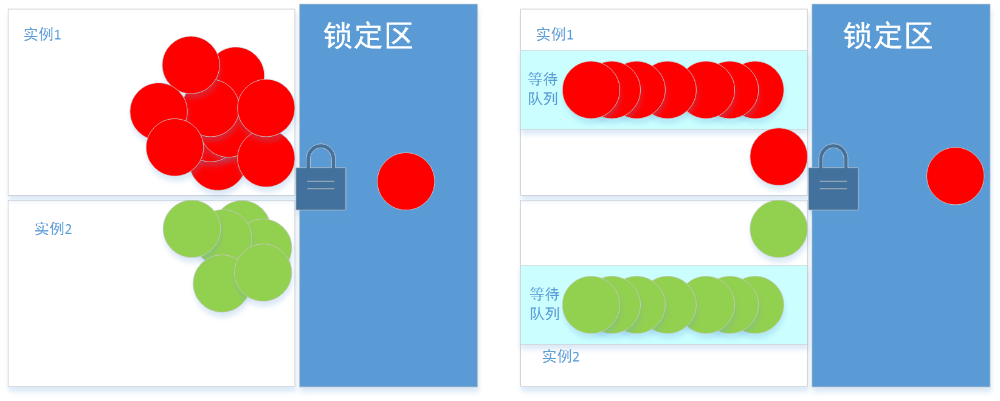

本文介绍了一种本地锁+分布式锁的实现，项目地址：https://github.com/adamswanglin/wllock
分布式锁相关
考虑分布式商品秒杀系统，库存量较少的商品，如何保证商品数量不超卖？
MySQL乐观锁和悲观锁
乐观锁和悲观锁的实现
假设，MySQL数据库中商品库存表product_stock结构如下：
字段
备注
product_id
商品id, 唯一索引unique_key
number
商量剩余数量
通过给商品库存加乐观锁，判断秒杀是否成功的伪代码:
1 2 3 4 5 6 7 8 9 10 11 12 13 14 15 16 17 18 19 20 21 22 23 private boolean isSuccess (int productId) int affectedCount = 0 ; while (affectedCount == 0 ) { ProductStock product = excute("select * from product_stock where product_id=#{productId}" ); if (product.getNumber>0 ) { affectedCount = excute("update product_stock set number=number-1 where product_id=#{productId} and number=#{product.getNumber}" ); } else { return false ; } } return true ; }
通过给商品库存加悲观锁，判断秒杀是否成功的伪代码:
1 2 3 4 5 6 7 8 9 10 11 12 13 14 15 private boolean isSuccess (int productId) ProductStock product = excute("select * from product_stock where product_id=#{productId} for update" ); if (product.getNumber>0 ) { excute("update product_stock set number=number-1 where product_id=#{productId}" ); return true ; } else { return false ; } }
乐观锁与悲观锁的区别
乐观锁的思路一般是表中增加版本字段，更新时where语句中增加版本的判断，算是一种CAS（Compare And Swep）操作，商品库存场景中number起到了版本控制的作用（ and number=#{product.getNumber}）。悲观锁之所以是悲观，在于他认为外面的世界太复杂，所以一开始就对商品加上锁（select ... for update），后面可以安心的做判断和更新，因为这时候不会有别人更新这条商品库存。
商品库存表中数量作为版本控制的特殊性，所以给商品库存加乐观锁可以简化为注释中更简洁的写法。在excute("update product_stock set number=number-1 where product_id=#{productId} and number=#{product.getNumber}")执行之后，即使商品数量在更新前发生了变化，更新数量为0，MySQL也会给product_stock的product_id索引加锁；这里的while循环执行不会超过3次。乐观锁是需要加上id+version的联合索引的，否则做不到在不加锁(不阻塞)的情况下实现更新。
分布式锁
网上有很多分布式锁的实现，这里讲一下基于redis的分布式锁的实现：
redis中有个命令setNX，是一种CAS操作，定义是
1 2 3 4 5 6 7 8 9 Boolean setNX (byte [] key, byte [] value) ;
不同于一般的set命令直接覆盖原值，setNx在更新的时候会判断当前key是否存在，如果存在返回false，如果不存在设置value并返回true。下面的代码利用这个CAS操作写的乐观锁：
1 2 3 4 5 6 7 8 9 10 11 12 13 14 15 16 17 18 19 public boolean lock (String key) try { while (true ) { if (redisTemplate.opsForValue().setIfAbsent(key, "" )) { redisTemplate.expire(key, 5000 , TimeUnit.MILLISECONDS); return true ; } } } catch (Exception e) { LOGGER.error("get lock {} error" , key, e); } return false ; }
释放锁的方法很简单，删掉就可以
1 2 3 4 5 6 7 8 public void unlock (String key) redisTemplate.delete(key); }
存在的问题
在低并发下，上面的两种解决方案都没有什么问题，但在应对类似秒杀应用的高并发场景下，上面的解决方案存在的问题：
MySQL
MySQL就不是为高并发而生的，强一致性才是它的追求。高并发下使用得考虑分库分表，甚至在应用层就得做分离。
分布式缓存
redis作为高性能的缓存系统，数据层并不存在太大问题。而对于应用层的每个节点来说，高并发下大量线程在运行获取锁的操作，每次其实只会有一个线程处于得到锁的状态；也就是说某一有很多线程运行着无意义的循环，浪费CPU时间。
我的方案
详见githubhttps://github.com/adamswanglin/wllock “github”
简介
对于单个系统实例而言，不要做过多无谓的循环，每次派一个线程代表和其它系统实例竞争这把锁，其它线程等待。简单的画个图和普通的分布式锁比较下：

图片左边，每个实例中的线程同时争抢锁；图片右边每个实例中只有一个线程在争抢锁，其它线程在等待队列中，我把实现线程排队的锁叫本地锁；每个单系统派一个线程和其它系统竞争锁，各个系统竞争的叫分布式锁。
wllock的优势
可以限制获取本地锁的队列长度，超过阈值服务降级。
可以设置获取锁的最长时间，超过时间任未获得所返回获取锁失败。
AOP方式，只需关注业务处理即可。
使用实例
详见github中的examplehttps://github.com/adamswanglin/wllock “github”
引用jar包
下载wllock包，修改build.gradle中uploadArchives的repository(url: "file:**.m2\\repository")到本地maven库，执行gradle jar和gradle uploadArchives打jar包到本地maven库。
在你新建的gradle项目中的build.gradle中加入依赖compile ("org.wl:wllock:0.0.1-SNAPSHOT")
配置锁信息
在application.yml中添加配置信息：
wl.systemName为当前系统名，将作为redis缓存key值的起始部分。
wllock.lockTimeMaxMillis是最长锁定时长，当系统中某个线程获取锁之后如果超过最长锁定时长，系统将自动释放当前线程分布式锁。
wl.singleWaitThreshold为单实例最长排队长度，当单实例中等待某个锁的队列长度超过最长排队长度，系统将对后面的进程返回获取锁失败，服务降级。
1 2 3 4 5 6 7 8 9 10 11 wllock: systemName: order lockTimeMaxMillis: 10000 singleWaitThreshold: 500 spring: redis: host: localhost port: 6379 maxTotal: 400 minIdle: 0 maxIdle: 20
获取锁代码
1 2 3 4 5 6 7 8 9 10 11 12 13 14 15 16 17 18 19 20 21 22 23 24 25 26 public void placeOrder (int accountId) LockValue lockValue = new LockValue(String.valueOf(productId)); lockValue.setTryLockMilliSeconds(1000 ); boolean placeSuccess = placeOrder(lockValue, accountId, 1000 ); if (placeSuccess) { } else { } } @LockGuard (name = "product" )private boolean placeOrder (LockValue lockValue, int accountId, int productId) throws Exception if (lockValue.isLockSuccess()) { return true ; } else { return false ; } }
上面简单演示了下单场景的代码。
需要锁保护的代码需要满足下面的规范：
方法需要添加 @LockGuard注解，注解中的name表示锁对象的名称。
方法的第一个入参是LockValue类型参数，LockValue的构造函数参数是key，可以选择性的设置TryLockMilliSeconds。
以上两步后
方法将以wl.systemName+LockGuard.name+LockValue.key为完整的锁id，例如实例中redis中的key值为order:product:1000。
方法中直接通过lockValue.isLockSuccess()判断是否获取锁成功，执行完成也无需手动释放锁。
锁定方法中处理的事情越少越好，即锁时间越小越好，例如实例中返回支付或者返回失败的页面就不用放到锁保护代码中处理。
本地锁实现
首先，有个静态变量LOCK_MAP，key值就是锁id，value是JUC包下的ReentrantLock，线程间的排队就是通过ReentrantLock实现的。
1 private static final ConcurrentHashMap<String, ReentrantLock> LOCK_MAP = new ConcurrentHashMap<>();
贴上获取锁的代码
1 2 3 4 5 6 7 8 9 10 11 12 13 14 15 16 17 18 19 20 21 22 23 24 25 26 27 28 29 30 31 32 33 34 35 36 37 38 public LocalLockResult tryLock (String key, int tryMilliSeconds) LocalLockResult localLockResult = new LocalLockResult(); ReentrantLock reentrantLock = LOCK_MAP.get(key); if (reentrantLock == null ) { reentrantLock = new ReentrantLock(true ); ReentrantLock existed = LOCK_MAP.putIfAbsent(key, reentrantLock); if (existed != null ) { reentrantLock = existed; } } localLockResult.setLock(reentrantLock); if (reentrantLock.getQueueLength() <= lockSettings.getSingleWaitThreshold()) { try { if (tryMilliSeconds > 0 ) { if (reentrantLock.tryLock(tryMilliSeconds, TimeUnit.MILLISECONDS)) { localLockResult.setLockSuccess(true ); } } else { reentrantLock.lock(); localLockResult.setLockSuccess(true ); } } catch (InterruptedException e) { LOGGER.error("get local lock {} in {} miliseconds interupted" , key, tryMilliSeconds); } } return localLockResult; }
下面是释放本地锁的代码
1 2 3 4 5 6 7 8 9 10 11 12 13 14 15 16 17 18 public void unlock (String key, LocalLockResult localLockResult) if (localLockResult != null && localLockResult.getLock() != null ) { if (localLockResult.isLockSuccess()) { localLockResult.getLock().unlock(); } if (!localLockResult.getLock().hasQueuedThreads()) { LOCK_MAP.remove(key, localLockResult.getLock()); } } }
为防止LOCK_MAP里的key值一直加入，导致内存泄漏，在释放锁的时候会判断当前ReentrantLock是否有排队队列，如果没有说明当前并发量小，可以删掉；需要说明的这个操作并不是线程安全的，也就是说可能存在从MAP中删除ReentrantLock时，ReentrantLock中有新加入的线程在排队，不过这并不影响获取锁。
分布式锁实现
分布式锁就是基于redis的实现，不过增加了等待时长的概念，可以设置超过一定时间自动放弃加锁。
通过执行lua脚本实现setNX和expire同时执行，防止分两步执行（setNx执行成功，expire未执行成功）可能导致的死锁。
1 2 3 4 5 6 7 8 9 10 11 12 13 14 15 16 17 18 19 20 21 22 23 24 25 26 27 28 29 30 31 32 33 34 35 36 37 38 39 40 41 42 private static final String SET_NX_WITH_EXPIRE = "local rst = redis.call('SETNX',KEYS[1],ARGV[1]);" + "if (rst==1) then redis.call('PEXPIRE', KEYS[1], ARGV[2]); end;" + " return rst;" ; private static RedisScript<Long> SET_NX_WITH_EXPIRE_SCRIPT = new DefaultRedisScript<>(SET_NX_WITH_EXPIRE, Long.class); public boolean tryLock (String key, int tryMilliSeconds) try { long start = System.currentTimeMillis(); while (true ) { List<String> keys = new ArrayList<>(1 ); keys.add(key); String value = "" ; Long result = redisTemplate.execute(SET_NX_WITH_EXPIRE_SCRIPT, redisTemplate.getStringSerializer(), LONG_SERIALIZER, keys, value, String.valueOf(lockSettings.getLockTimeMaxMillis())); if (result == 1 ) { return true ; } long end = System.currentTimeMillis(); if (tryMilliSeconds > 0 && tryMilliSeconds < (end - start)) { return false ; } } } catch (Exception e) { LOGGER.error("get distributionlock {} error" , key, e); } return false ; }
AOP的方式加锁实现
1 2 3 4 5 6 7 8 9 10 11 12 13 14 15 16 17 18 19 20 21 22 23 24 25 26 27 28 29 30 31 32 33 34 35 36 37 38 39 @Around ("@annotation(lockAnnotation) && args(lockValue, ..)" )public void aroundAction (JoinPoint joinPoint, LockGuard lockAnnotation, LockValue lockValue) throws Throwable String key = lockSettings.getSystemName() + ":" + lockAnnotation.name() + ":" + lockValue.getKey(); LockValue.LockDetail lockDetail = null ; try { lockDetail = tryLock(key, lockValue.getTryLockMilliSeconds()); lockValue.setLockSuccess(lockDetail.isDistributionLock()); lockValue.setLockDetail(lockDetail); ((ProceedingJoinPoint) joinPoint).proceed(); } catch (InterruptedException e) { LOGGER.error("get {} interupted" , key); } finally { try { if (lockDetail != null && lockDetail.isDistributionLock()) { distributionLock.unlock(key); } } catch (Exception e) { LOGGER.error("unlock distribution {} error" , key, e); } try { if (lockDetail != null && lockDetail.isLocalLock()) { localLock.unlock(key, lockDetail.getLocalLockResult()); } } catch (Exception e) { LOGGER.error("unlock local {} error" , key, e); } } }
其中tryLock是本地方法：
1 2 3 4 5 6 7 8 9 10 11 12 13 14 15 16 17 18 19 20 21 22 23 24 25 26 27 28 29 30 31 32 33 private LockValue.LockDetail tryLock (String key, long milliSeconds) throws InterruptedException { long start = System.currentTimeMillis(); LockValue.LockDetail lockDetail = new LockValue.LockDetail(); LocalLockResult localLockResult = localLock.tryLock(key, (int ) milliSeconds); long local = System.currentTimeMillis(); boolean distributionLockSuccess = false ; if (localLockResult.isLockSuccess()) { long leftMiliSeconds = milliSeconds - (local - start); if (milliSeconds == 0 || leftMiliSeconds > 0 ) { distributionLockSuccess = distributionLock.tryLock(key, milliSeconds == 0 ? 0 : (int ) leftMiliSeconds / 2 ); } } long distribute = System.currentTimeMillis(); lockDetail.setLocalLockResult(localLockResult); lockDetail.setLocalLock(localLockResult.isLockSuccess()); lockDetail.setDistributionLock(distributionLockSuccess); lockDetail.setLocalLockTime(local - start); lockDetail.setDistributionLockTime(distribute - local); LOGGER.debug("tryLock {} {} , use time : {} ms " , key, lockDetail.isDistributionLock(), System.currentTimeMillis() - start); return lockDetail; }